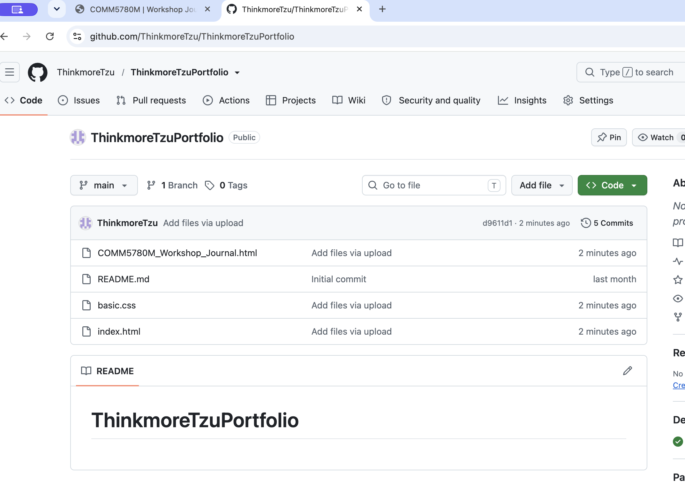
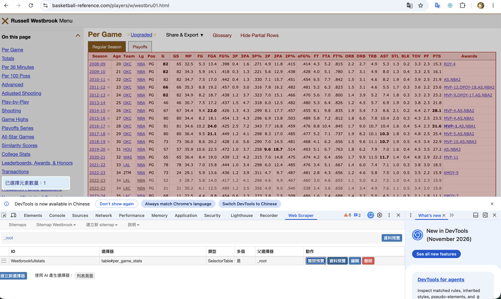
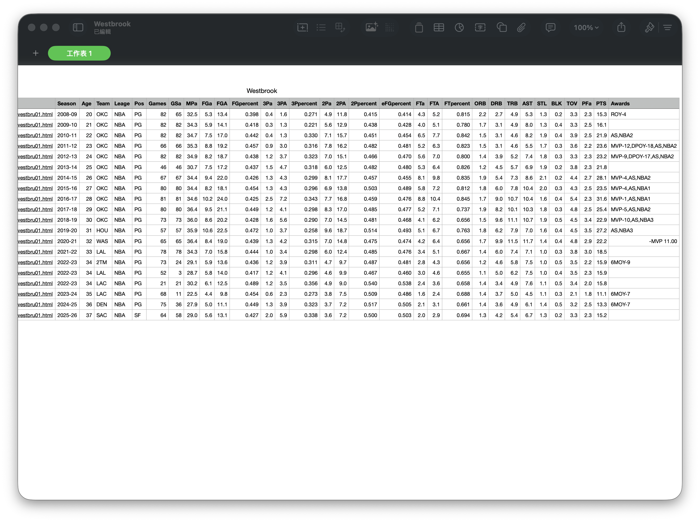
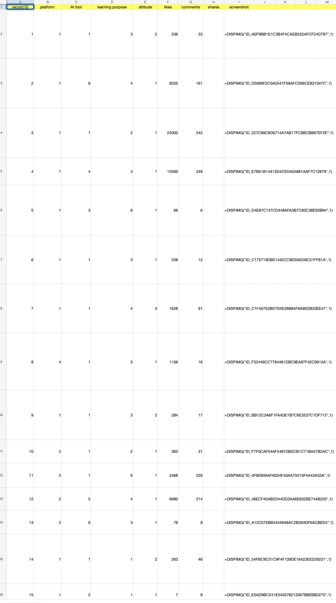
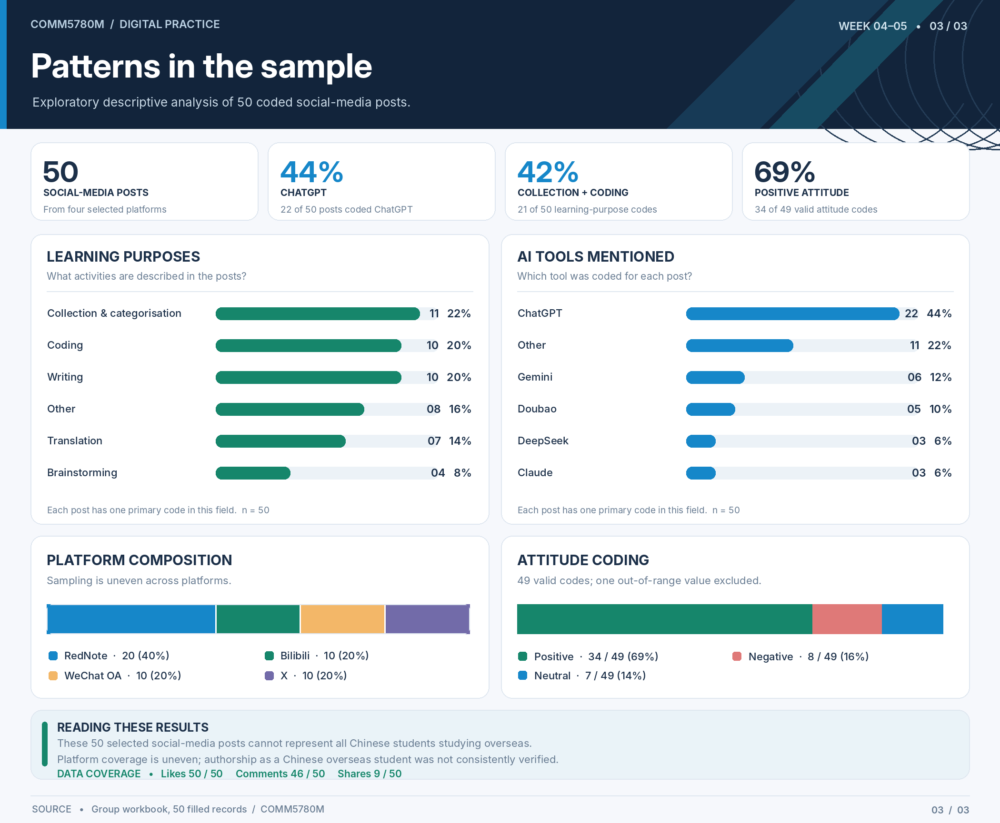

Week 2 — Creating and Hosting a Website
My work
I refreshed my understanding of HTML and CSS, created and edited my portfolio website, and used GitHub to upload and publish the website. I also became familiar with CampusPress and its purpose.
Reflection
As a Digital Media Technology undergraduate, I had learned some HTML before, but I had forgotten most of it. This workshop gave me an opportunity to review the basics and bring back some of that knowledge. I also found it challenging to design the layout and make the website look the way I wanted.
Publishing my own website for the first time felt quite special. It was interesting to see something I had learned and created become connected to the real world.
Workshop evidence

Week 3 — Web Scraping
My work
In this workshop, I used the WebScraper.io Chrome extension to collect Russell Westbrook's NBA statistics from Basketball-Reference. I extracted his season-by-season statistics, including points, rebounds, assists and shooting percentages, and organised the data into a table.
My reflection
At first, I found the tool a bit confusing because I was unfamiliar with some of the technical terms. It took me some time to work out how to use it. However, I enjoyed working with basketball data, especially as Westbrook is my favourite player. I also felt a little bit sense of achievement when I successfully collected the data.
This workshop helped me realise that I could collect data from websites without writing Python code. However, I still need more practice to understand how web scraping can be used in research.
Workshop evidence


Week 4–5 — Data Collection and Visualisation
My work
For this group project, we explored the question: "How do Chinese overseas students use generative AI tools to support their everyday learning?"
We divided the data collection work between group members, with each person focusing on a different social media platform. Together, we collected 50 posts and organised the information into a shared spreadsheet. We also developed coding rules to classify AI tools, learning purposes and attitudes. Using this dataset, we explored patterns in AI use through data visualisation.
My reflection
At first, our group did not communicate much, and everyone was trying to understand the task individually. This made our progress quite slow. However, once we started sharing ideas and dividing up the work, everything became much more efficient. This experience showed me how important effective communication and teamwork are.
Organising the posts into numerical categories made the data easier to compare and visualise. However, our sample was limited, and we could not always confirm whether the posts represented Chinese overseas students.
Workshop evidence


Week 6 — Identity, Algorithmic Identity and Data
My work
In this workshop, I explored how social media platforms collect information about their users. I chose Instagram and went to Meta's Accounts Centre to request a copy of my personal data.
I have submitted the data export request, but the file is still being prepared. I will continue exploring the information once it becomes available.
My reflection
This process made me realise that...